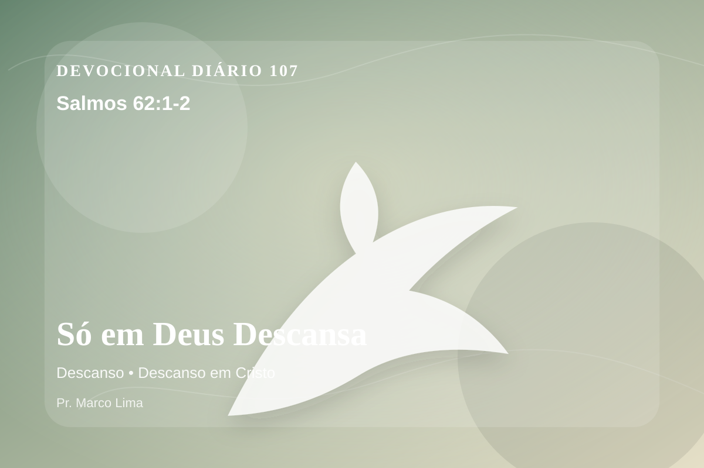

Só em Deus Descansa
Somente em Deus espera silenciosa a minha alma; dele vem a minha salvação. Só ele é a minha rocha e a minha salvação; é ele a minha fortaleza; não serei grandemente abalado.
Pensamento
A leitura de hoje convida você a diminuir o ruído, abrir a Bíblia com humildade e deixar que Salmos 62:1-2 fale com profundidade.
A alma aprende descanso quando para de procurar salvadores menores. Só Deus é rocha firme; tudo o mais pode ajudar, mas não pode substituir o Senhor.
O tema de descanso precisa ser recebido com simplicidade e seriedade. Quando essa verdade encontra resistência dentro de nós, é justamente ali que o Espírito deseja trabalhar. O descanso prometido por Deus não é fuga da responsabilidade, mas alívio para a alma que deixa de tentar vencer pela própria força. Em Cristo, o coração encontra descanso porque a graça substitui o peso do merecimento.
A Palavra convida você a abandonar desculpas. Onde houver pecado, confesse; onde houver incredulidade, peça fé; onde houver cansaço, volte-se para Cristo.
Arrependimento não é apenas sentir peso na consciência; é voltar-se para Deus, abandonar o caminho que entristece o Senhor e confiar que a graça de Cristo é suficiente para perdoar e transformar.
Este é o evangelho que sustenta toda aplicação: Jesus Cristo morreu pelos pecadores, ressuscitou em vitória e chama cada pessoa a responder com fé, arrependimento e uma vida rendida ao Seu senhorio.
Deus não chama você para uma religiosidade sem vida, mas para reconciliação com Ele por meio de Cristo. Essa reconciliação começa com fé humilde e arrependimento sincero.
Se o texto trouxe consolo, adore. Se trouxe confronto, arrependa-se. Se trouxe direção, obedeça. Em tudo, volte os olhos para Cristo.
Para Praticar Hoje
- Leia Salmos 62:1-2 lentamente e destaque uma palavra ou expressão central do texto.
- Confesse a Deus um pecado, resistência ou frieza espiritual que esta Palavra revelou.
- Declare sua fé em Jesus Cristo e pratique hoje uma atitude concreta de arrependimento e obediência.
Oração
Senhor Deus, eu recebo a Tua Palavra em Salmos 62:1-2 com reverência. Reconheço que preciso de arrependimento, perdão e nova vida. Creio que Jesus Cristo morreu pelos meus pecados e ressuscitou para me salvar. Lava meu coração, governa minha vida e conduz-me em obediência simples ao Teu evangelho. Em nome de Jesus. Amém.
{kind=link}